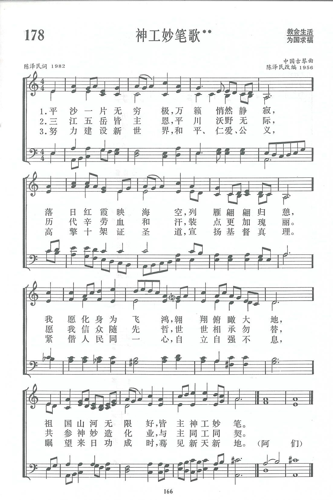

|
|
讚美詩(新編) 第178首《神工妙筆歌》 |
|
|
|
|
https://www.zanmeishige.com/tab/13851.html?songbook=1&index=178
 |
|
|
|
|

https://youtu.be/udGjaWWZ37g - 陈泽民《神工妙笔歌》Chen Zemin, “Creator’s
荣耀合唱团https://youtu.be/_oo4rKeSlKE
第178首 神工妙笔歌** _陈泽民 THE MIRACULOUS PEN OF DIVINE WORK
经文：“用绳量给我的地界，坐落在佳美之处；我的产业实在美好”(诗16：6)。
《神工妙笔歌》的歌词是金陵协和神学院副院长陈泽民牧师所作，曲调由他根据《平沙落雁》改编。
陈泽民是神学教授，也是我国教会难得的音乐家、作曲家。他生于l917年，l941年毕业于上海沪江大学，1944年获南京金陵神学士学位，曾任浙江绍兴福康医院宗教服务部主任。他在该时期写下的灵修书籍《云柱与火柱》已于1991年重版。195O年起，他从事神学教育迄今，真可谓是四十年如一日，桃李遍全国。他对于推进教会圣乐工作一向不遗余力，是《新编》编辑委员会委员，也是金陵协和神学院出版的《圣歌选集》编辑组主要负责人。
陈泽民年轻时学过古琴，当时觉得有几首琴曲很适合改编为赞美诗。l956年他作了这方面的尝试，将《平沙落雁》古琴曲配上自编的赞美诗歌词《欢迎复活晨》，发表在《天风》上。1981年，中国基督教圣诗委员会组成后，他将《天风》1956年曾登出过的两首由他根据古琴调改编的赞美诗寄来。除了这一首外，另一首是《普安调(诗篇1O3篇l至l3节)》，见《新编》第381首。
《平沙落雁》本是古琴独奏曲，相传为l5世纪明朝朱权所作，是古琴曲中最被人喜爱的一首，几乎每一位古琴家都爱演奏。它有许多不同传谱，但基本曲调相似，本来是描写平沙无际，落雁低回的情景，曲调优美，是我国民族音乐的珍贵遗产。原曲较长，改编的是其中的主题和发展的乐句。陈泽民重读了《欢迎复活晨》的歌词，感到配在此曲上不够满意。在同工们的鼓励下。他重写了歌词，即现在的《神工妙笔歌》。
新的歌词以“平沙一片无穷极，万籁悄然静寂，落日红霞映海空，列雁翩翩归憩”起始，完全重现了《平沙落雁》曲的意境。它也是对祖国山河美丽的描写，富于爱国感情。作为赞美诗，作者把大好河山归结于神的奇妙创造，这就是“神工妙笔”的主题思想。但他并没有停留于感谢神的创造之恩，而是指出，世界需要历代的人付出血汗代价去辛劳工作，才能“装点更加瑰丽”。为此，他鼓励信徒“共参神妙造化业”，为建设一个美好的世界而作努力，这也是“与主同工”。
第三节更进一层，说明信徒不光建设这个有形的世界，还有对新天新地的盼望。它表现在信徒在世既要高擎十架，传扬基督的真道，还要与人民同心实现和平、仁爱、公义，才能使神的国降临，神的旨意行在地上，如同行在天上。这首诗从写景开始，落实于信徒的责任与更美好的盼望，诚为抒发爱国爱教感情的不可多得的佳作。
在改编曲调方面，陈泽民不仅照顾到赞美诗的格律需要，在四声部合唱的写作中，还考虑使用中国民族风格的和声，构成了一幅色彩斑斓的风景画。全曲最后一个主音上的小和弦，高音1升高半音，转成大和弦，即所谓“辟卡迪三度”①，是巴赫常用的结尾和弦，给人一种充满希望和光明的感觉。
①辟卡迪三度(1ierce de Picardie)：用在小调式乐曲结束和弦中的大三度，代替应该出现的小三度。